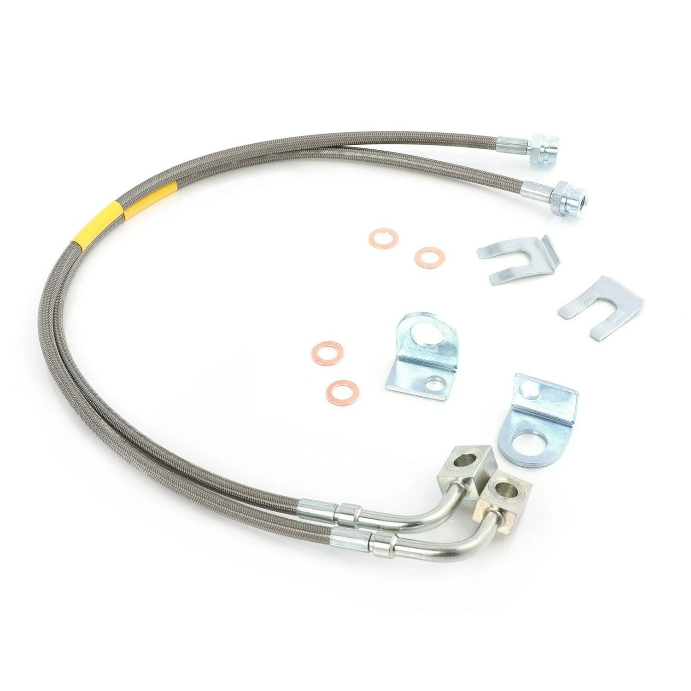

1 / 6REAR wydłużony przewód hamulcowy Do 07-18 Jeep Wrangler JK 2-6 lift
Specyfikacja przedmiotu: Stan: nowy Elementy w zestawie: Przewód hamulcowy Umieszczenie na pojeździe: Tył Marka: FAPO Typ: wąż Gwarancja producenta: 1 rok Numer części producenta: FZ070210 Uniwersalne dopasowanie: Nie Zastosowanie: kompatybilny z 87-06 JEEP wrangler TJ YJ XJ z podnośnikiem 4-6 cala Parking obejmuje: 2 sztuki tylnych przewodów hamulcowych Cechy produktu: -Długość tylna: 22,7 cala -W pełni zatwierdzon…
Item specifics: Condition: New Items Included: Brake Line Placement on Vehicle: Rear Brand: FAPO Type: Hose Manufacturer Warranty: 1 Year Manufacturer Part Number: FZ070210 Universal Fitment: No Application: compatible with 87-06 JEEP wrangler TJ YJ XJ with 4-6 Inch Lift Parking includes: 2 pieces of Rear Brake Lines Features: -Rear length: 22.7" -Fully DOT Approved And Meet The Very Highest DOT and ISO Standards -Come complete with Copper Banjo Washers and Line Retention Brackets -Features strong woven stainless steel outer shell that protects the rubber and Kevlar casing housing that encases the Teflon inner hose -Braided stainless steel exterior keeps your lines free from off-road debris, rocks, and mud that can penetrate factory rubber lines -Durable outer layer prevents expansion of the internal Teflon layer. High Quality hollow fasteners at both ends of each brake line and S at both ends provide a leak-free flow path -100% Brand New Items, Never Used Or Installed -The accessories in the photos are included -1 year warranty for any manufacturing defect compatible with 2007-2018 JEEP wrangler JK 2 Door & 4 Door with 2-6 Inch lift
699,99 PLN
Opis produktu
Specyfikacja przedmiotu:
Stan: nowy
Elementy w zestawie: Przewód hamulcowy
Umieszczenie na pojeździe: Tył
Marka: FAPO
Typ: wąż
Gwarancja producenta: 1 rok
Numer części producenta: FZ070210
Uniwersalne dopasowanie: Nie
kompatybilny z JEEP wrangler JK 2007-2018 2 drzwi i 4 drzwi z podnośnikiem 2-6 cala
Stan: nowy
Elementy w zestawie: Przewód hamulcowy
Umieszczenie na pojeździe: Tył
Marka: FAPO
Typ: wąż
Gwarancja producenta: 1 rok
Numer części producenta: FZ070210
Uniwersalne dopasowanie: Nie
Zastosowanie:
kompatybilny z 87-06 JEEP wrangler TJ YJ XJ z podnośnikiem 4-6 cala
Parking obejmuje:2 sztuki tylnych przewodów hamulcowychCechy produktu:-Długość tylna: 22,7 cala -W pełni zatwierdzony DOT i spełniający najwyższe standardy DOT i ISO -W komplecie z miedzianymi podkładkami Banjo i wspornikami do mocowania linki -Posiada mocną tkaną powłokę zewnętrzną ze stali nierdzewnej, która chroni gumową i kevlarową obudowę, która otacza teflonowy wąż wewnętrzny -Zewnętrzna część z plecionej stali nierdzewnej chroni liny przed zanieczyszczeniami terenowymi, kamieniami i błotem, które mogą przedostać się przez fabryczne gumowe liny -Trwałe warstwa zewnętrzna zapobiega rozszerzaniu się wewnętrznej warstwy teflonu. Wysokiej jakości puste łączniki na obu końcach każdego przewodu hamulcowego i S na obu końcach zapewniają szczelną ścieżkę przepływu. -100% fabrycznie nowe przedmioty, nigdy nie używane ani instalowane.
kompatybilny z JEEP wrangler JK 2007-2018 2 drzwi i 4 drzwi z podnośnikiem 2-6 cala
Item specifics:
Condition: New
Items Included: Brake Line
Placement on Vehicle: Rear
Brand: FAPO
Type: Hose
Manufacturer Warranty: 1 Year
Manufacturer Part Number: FZ070210
Universal Fitment: No
compatible with 2007-2018 JEEP wrangler JK 2 Door & 4 Door with 2-6 Inch lift
Condition: New
Items Included: Brake Line
Placement on Vehicle: Rear
Brand: FAPO
Type: Hose
Manufacturer Warranty: 1 Year
Manufacturer Part Number: FZ070210
Universal Fitment: No
Application:
compatible with 87-06 JEEP wrangler TJ YJ XJ with 4-6 Inch Lift
Parking includes: 2 pieces of Rear Brake Lines Features: -Rear length: 22.7" -Fully DOT Approved And Meet The Very Highest DOT and ISO Standards -Come complete with Copper Banjo Washers and Line Retention Brackets -Features strong woven stainless steel outer shell that protects the rubber and Kevlar casing housing that encases the Teflon inner hose -Braided stainless steel exterior keeps your lines free from off-road debris, rocks, and mud that can penetrate factory rubber lines -Durable outer layer prevents expansion of the internal Teflon layer. High Quality hollow fasteners at both ends of each brake line and S at both ends provide a leak-free flow path -100% Brand New Items, Never Used Or Installed -The accessories in the photos are included -1 year warranty for any manufacturing defect
compatible with 2007-2018 JEEP wrangler JK 2 Door & 4 Door with 2-6 Inch lift
FAPO Polska
Ten produkt obsługujemy lokalnie
Autoryzowana obsługa
FAPO Polska prowadzi katalog, kontakt i zamówienia bez odsyłania klienta do zewnętrznych sklepów.
Dobór po aucie
Sprawdzamy dopasowanie produktu do pojazdu, rocznika i wersji przed finalizacją zamówienia.
Wsparcie po zakupie
Masz kontakt w Polsce w sprawach zamówień, wysyłki, gwarancji i zwrotów.